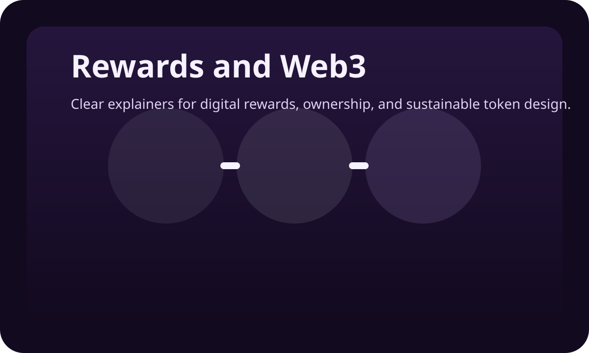

Move-to-earn is a model where movement links to digital rewards. The concept became popular because it gave healthy behavior an economic layer, but many early versions struggled when excitement, onboarding, and reward expectations moved faster than the product itself could support.
Move-to-earn caught people’s attention because it combined two things that rarely live together cleanly: health behavior and digital value. For users, it suggested that something as everyday as walking could become more visible, more engaging, and potentially more rewarding than a standard activity tracker ever made it feel.
That is why the model remains interesting even after the first wave of hype has passed. The core question is still compelling. If movement creates value for the body, for attention, for consistency, and for better routines, can digital systems reflect some of that value in a way users actually understand and care about?
The answer is yes, but with an important condition. The model only works well when the movement still matters more than the noise around it.
How the model works
Most move-to-earn systems track some form of activity, steps, calories, walking time, workouts, or broader movement data, and connect it to points, in-app rewards, or token-linked value. On the surface, that is simple enough. You move, the system recognizes it, and some form of reward accumulates.
The deeper challenge is not the tracking itself. It is the user journey around it. The model works best when the health experience is useful first, the reward layer is easy to understand, and the more technical parts of the system arrive gradually rather than all at once.
Why people found the idea so compelling
Part of the appeal was emotional. Many people already feel that healthy behavior is valuable, but they rarely see that value reflected immediately. Move-to-earn offered a way to make the invisible more visible. It suggested that consistency could feel tangible, not just virtuous.
There was also a product design advantage. Rewards can increase engagement when they help people come back, notice progress, and keep a stronger connection to routine. That part of the model is not hype. It is simply a behavioral truth. What caused problems was not the idea of reward itself. It was the way some products framed and financed the reward story.
Why early move-to-earn apps struggled
Many early projects treated the reward layer as the headline and the health behavior as the mechanism underneath it. That pushed expectations in the wrong direction. The movement was slow, human, and real. The economic story around it was often fast, speculative, and unsustainably ambitious.
When onboarding felt too technical, token expectations were too aggressive, or the utility story was too vague, users quickly lost trust. In many cases, the product did not fail because rewarding movement was a bad concept. It failed because the economic narrative ran ahead of the actual user experience.
What a sustainable reward model looks like
A sustainable version of move-to-earn is quieter than the early market imagined. It starts with a product that is worth using even without a deep interest in tokens. It rewards consistency more than short bursts. It explains utility clearly. It uses onboarding that feels guided rather than intimidating. Most importantly, it keeps the health experience intact even for users who never become especially interested in Web3.
That does not make the reward layer unimportant. It makes it more credible. When users can understand why a system exists and what role each part plays, the whole experience becomes easier to trust and easier to stay with.
What readers should look for
If you are evaluating a move-to-earn product, the right question is not only what can it reward. It is also what can it sustain. Is the core product useful? Is the onboarding clear? Does the reward story feel connected to real behavior? Can a mainstream user understand the experience without needing a crash course in crypto?
Those are the questions that separate an interesting concept from a durable product. The strongest systems do not force users to care about every layer immediately. They let understanding deepen as the user journey deepens.
Emorya approaches the category from that calmer angle. Movement, recovery, routine, points, EMRS, and guided wallet access are designed to fit together in a way that still feels understandable to mainstream users on day one.
FAQs
Does move-to-earn mean getting rich from walking?
No. That framing caused many of the early problems. Sustainable systems focus more on engagement, clarity, utility, and behavior than on exaggerated reward expectations.
Is move-to-earn always a Web3 model?
Not always. Some products use game-like rewards without a blockchain layer, while others connect activity to tokens or digital ownership.
Why did so many early products lose momentum?
Because the economic story often moved faster than the health product could support, which made onboarding, expectations, and trust harder to maintain.
What makes a move-to-earn product more credible?
A useful core product, clearer onboarding, visible utility, and rewards that feel connected to real long-term behavior rather than short-term hype.
Do users need crypto knowledge to get started?
They should not. The better products guide users gradually and keep the early experience simple enough to understand without technical expertise.
Conclusion
Move-to-earn remains a useful idea because it tries to make healthy behavior more visible and more valuable. But the model only works when the movement stays at the center, the product remains useful on its own, and the reward layer is built with more discipline than hype.
Next, read how Emorya turns movement into digital value or go back a level and see how gamification helps people stay consistent.
Explore how Emorya’s reward economy works.